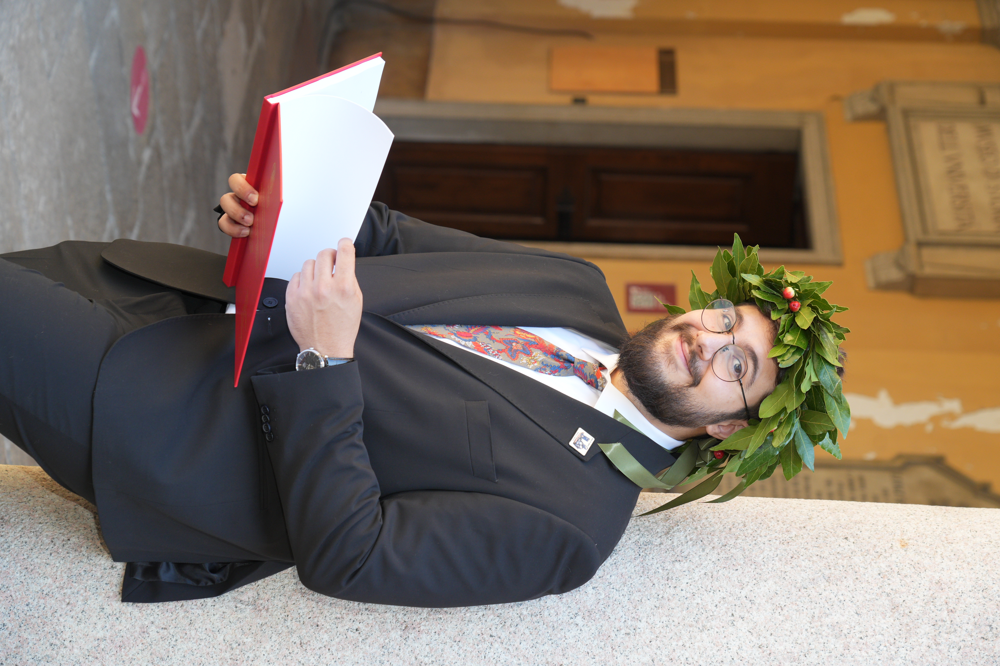

Experimental particle physics
Understanding fundamental particles through simulations, data analysis, detector modelling and the comparison between theoretical predictions and experimental signatures.
I'm Alessandro Codega, a physics graduate from the University of Pavia working at the intersection of high-energy physics, phenomenology, the Standard Model, Higgs physics and Beyond Standard Model searches.
My work combines theoretical ideas with computational and experimental tools — from Monte Carlo simulations and detector modelling to machine learning and statistical analysis.

My background is in theoretical physics and high-energy physics, with particular interests in quantum field theory, the Standard Model, Higgs phenomenology and searches for physics beyond the Standard Model.
Understanding fundamental particles through simulations, data analysis, detector modelling and the comparison between theoretical predictions and experimental signatures.
Studying exotic Higgs decays and phenomenological signatures, including searches for the decay H → Za within the context of Beyond Standard Model physics.
Developing machine-learning methods for particle-physics analysis, including regression and classification pipelines for improving signal-background separation and controlling systematic effects.
Tools & methods: Python · NumPy · pandas · scikit-learn · matplotlib · C++ · Fortran · ROOT · Powheg · Pythia8 · Herwig7 · Delphes · FastJet · SoftDrop · LaTeX
My Master's thesis investigated the phenomenology of the exotic Higgs decay H → Za using Monte Carlo generators and a two-stage neural-network pipeline.
Signal and background Monte Carlo samples generated with Powheg, Pythia8 and Herwig7, with fast detector simulation through Delphes.
Jet reconstruction and substructure analysis using FastJet and SoftDrop grooming algorithms.
A two-stage regression and classification pipeline designed to improve signal-background separation and reduce theoretical systematic uncertainties.
Supervisors: Prof. Daniela Rebuzzi · Dr. Sonia Carrà · Dr. Giovanni Stagnitto
A. Codega, S. Carrà, D. Rebuzzi, G. Stagnitto — Oral presentation, SIF Florence 2026 Conference, Florence, Italy.
L. Zatti, C. Aimè, D. Aurelio, E. Budassi, A. Codega, P. Montagna, S. Restelli — Talk accepted at GIREP 2026, Rethymno, Crete. Journal manuscript in preparation.
Poster presentation, Department of Physics, Pavia — Physics Department Congress, 17 February 2025.
I enjoy communicating physics as much as studying it. My outreach experience has ranged from particle-physics masterclasses to public demonstrations and interactive events.
Pavia, Italy. Assisted high-school students during particle physics analysis exercises, helping them identify particle events and understand key concepts.
Selected through a competitive scholarship. Contributed to the requalification of high-school physics laboratories in the province of Pavia, developing and explaining experimental activities and working with teachers.
“Fisica da leccarsi i baffi”. Communicated physics through everyday kitchen phenomena, including measuring the speed of light with a microwave and chocolate bar, exponential beer-froth decay and the hot-chocolate effect.
“A caccia di fotoni gamma con l'INAF”. Assisted with live demonstrations and interactive exhibits concerning the Cherenkov Telescope Array Observatory and gamma-ray physics.
Participated in public scientific outreach activities, including preparation and direction of the Escape Room CNAO on biomedical physics.
University of Pavia, Italy · Final grade 106/110 · GPA 28.83/30. Thesis: A Phenomenological Study for H → Za Searches .
University of Pavia, Italy · Final grade 100/110. Thesis: Constraining the Neutrino Sector .
Liceo Scientifico Carlo Donegani, Sondrio, Italy · Final grade 100/100.
Physics is a big part of my life, but it is definitely not the only universe I inhabit. I like collecting interests almost as much as I like collecting questions — from old music and photography to books, food, games, travel, and the wonderfully strange corners of the internet.
I'm a big fan of English and French Baroque music and an amateur viola da gamba player. I especially love the way Tobias Hume writes for the viol, and the composed but expressive way Marin Marais uses the instrument as a means of expression.
I like photographing people and landscapes — and, honestly, pretty much anything that catches my eye. A nice light, an interesting face, a strange detail, or a beautiful view is usually enough.
My reading habits are eclectic. I've loved Tuesdays with Morrie, the Dune saga, Heartstopper, and plenty of other things that don't necessarily belong on the same bookshelf.
My favourite thing to cook is apple pie. Nothing beats the smell of baked apples and cinnamon sugar filling the kitchen. Roasted chicken and lasagna are close seconds.
I have a soft spot for cozy games, horror games and creepypastas. I also enjoy listening in on TikTok drama despite not actually having a TikTok account. My favourite YouTuber is Gab Smolders.
I like travelling because it is a neat way to challenge myself — and because discovering what people eat in different places is one of the best parts of going somewhere new.
Cats are a big part of my life. I currently live with my furriend Maxwell, who is naturally much more important than any academic CV would suggest.
I tend to follow whatever catches my attention next. Sometimes that's physics; sometimes it's Baroque music, a game, a recipe, a photograph, or a completely unnecessary internet rabbit hole.
Physics, scientific outreach, early music, books, food, photography, games, travel, cats, or something completely unexpected.
INSPIRE-HEP · ORCID · Google Scholar · GitHub · LinkedIn